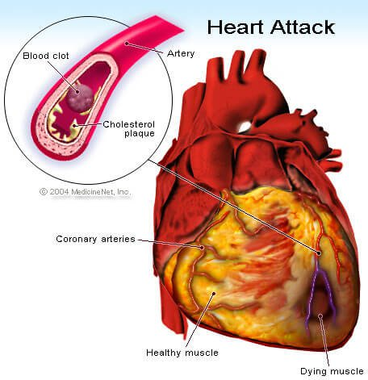

Why it's needed?
Electrocardiograms or ECG let your doctor look at you heart's activity. It measures the electrical activity of the heartbeat. Abnormal heart rhythms and any other cardiac symptom or event can happen at any period of time and may go away quickly.
An ECG gives two major kinds of information. First, a doctor can determine how long electrical wave takes place to pass through the heart by measuring the time intervals on the ECG. This will if the electrical activity is normal or slow, fast or irregular. Second, a cardiologist can be able to find out if parts of the heart are too large or are overworked by measuring the amount of electrical activity passing through the heart muscle.
Heart Attack
Not all people who have heart attacks have the same symptoms or have the same severity. Some may have mild pain, while others may have severe pain. Some people have no symptoms; others have first sign of sudden cardiac arrest. The more signs and symptoms you have, the greater risk of having a heart attack.
Some heart attacks strike suddenly, but many people have warning signs and symptoms early on. The earliest warning sign may be a recurring chest pain or angina that's triggered by exertion and relieved by resting. This is cause by a temporary decrease of blood flow to the heart due to possible obstruction in the artery.
A heart attack, also known as myocardial infarction, occurs when a part of the muscle doesn't receive enough blood flow. The more time passes by without treatment to restore blood flow, the greater the damage it does to the heart muscle.
Symptoms
Common heart attack signs and symptoms include:
- Pressure, tightness, pain, or a squeezing or aching sensation in the chest or arms that may spread to neck, jaw, or back.
- Nausea, indigestion, heartburn or abdominal pain.
- Shortness of breath.
- Cold sweat.
- Fatigue.
- Lightheadedness or sudden dizziness.
Risk Factors
Certain factors can contribute to unwanted buildup of fatty deposits that narrow the arteries throughout the body. Knowing these risk factorscan help minimize or eliminate the chances of having heart attack.
Risk factors include:
- Age. Men age 45 and over, and women age 55 and over are more likely to have heart attack than younger men and women.
- Tobacco. Smoking and long-term exposure to secondhand smoke increase the risk of heart attack.
- High blood pressure. A high level of low-density lipoprotein (LDL) cholesterol or the "bad" cholesterol, and high level of triglycerides, which is a type of blood fat that's related to diet are most likely to narrow arteries. Whereas high level of high-density lipoprotein (HDL) cholesterol or the "good" cholesterol lowers risk of heart attack.
- Diabetes. Having diabetes, not having enough insulin or not responding to insulin well, causes body's blood sugar levels to rise which increases risk of heart attack.
- Family history of heart attack. If relatives have had early heart attacks, you may be at increased risk.
- Lack of physical activity. An inactive lifestyle contributes to high blood cholesterol levels and obesity. Exercise is beneficial in lowering high blood pressure.
- Obesity. Obesity is associated with high cholesterl levels, high triglyceride levels, high blood pressure and diabetes.
- Stress. Body may respond to stress in ways that increases risk of heart attack.
- Illegal drug use. Use of stimulant drugs can trigger spasms of coronary arteries that can cause heart attack.
- History of preeclampsia. A condition that causes high blood pressure during pregnancy which increases risk of high blood pressure.
- History of autoimmune condition. Conditions such as rheumatoid arthritis or lupus can increase risk of having heart attack.
Complications
Complications are often related to the damage done to the heart during an attack. Damage can lead to:
- Abnormal heart rhythms (arrhythmias). Electrical "short circuits" can develop, resulting in abnormal heart rhythms, some of which can be serious, even fatal.
- Heart failure. An attack may damage so much heart tissue that the remaining heart muscle can't efficiently pump blood out of the heart. Heart failure may be temporary, or it can be a chronic condition resulting from an extensive and permanent damage to the heart.
- Heart rupture. Areas of the heart muscle weakened by the heart attack can rupture which can lead a hole in part of the heart. This is often fatal.
- Valve problems. Heart valve damaged during heart attack may develop severe leakage problem.